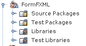
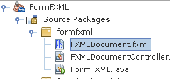
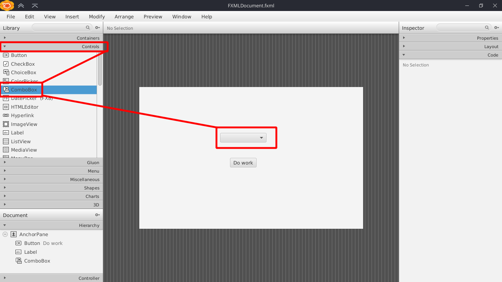
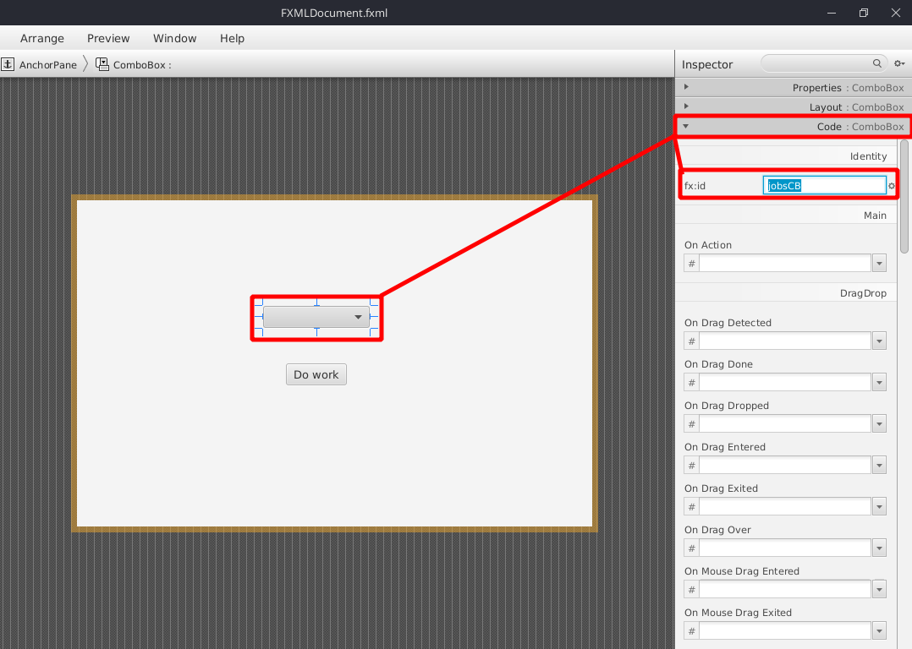
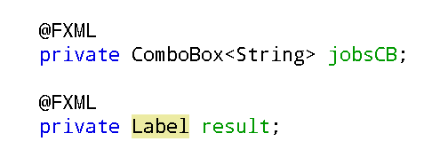
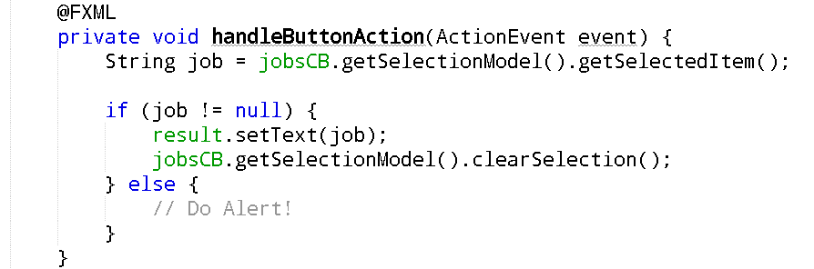

بسم الله الرحمن الرحيم
بعد عملية إعداد النتبينز والسين بيلدر نقوم بإعداد مشروع JavaFXML جديد وسأسميه FormFXML
نفتح ملف الـFXML باستخدام برنامج الـSceneBuilder بالضغط مرتين بالماوس على الملف المطلوب لنبدأ بالتصميم
باستخدام SceneBuilder نقوم بسحب خيار ComboBox من لائحة Controls ونضعه في المكان المناسب للواجهة
نضغط على قائمة الاختيار ComboBox ونختار fx:id مناسب من لائحة Code على اليمين
والآن ننتقل للبرمجة
نقوم بفتح الـController باستخدام النتبينز ونعرف الـComboBox الذي سيحتوي على النصوص بهذه الطريقة
وأنا قمت تعريف Label تحت الزر ﻹظهار النص الذي يتم اختياره
نذهب للدالة initialize والتي تكون بشكل افتراضي في الـController ثم ندخل القيم التي نريد أن تظهر في القائمة كنصوص باستخدام دالة
getItems().addAll()
للحصول على النص الذي تم اختياره من قائمة الاختيار نستخدم الدالة
getSelectionModel().getSelectedItem()
ولمسح الاختيارات السابقة والعودة للبداية نستخدم الدالة
getSelectionModel().clearSelection()
نذهب للدالة التي تكون مبرمجة بشكل افتراضي مع الزر الموضوع في SceneBuilder ونضع فيها الكود المطلوب
بحيث يطبع في الـLabel المطلوبة (result) قيمة الـComboBox التي تم اختيارها (لا تساوي null) في حالة تم اختيار وظيفة أما وفي الحالات الأخرى يطبع رسالة تحذير من نوع Error ويطلب منه تحديد الوظيفة
للتعرف على كيفية عمل رسالة تحذير قم بالرجوع للصفحة الرئيسية
لا تنسونا من صالح دعائكم